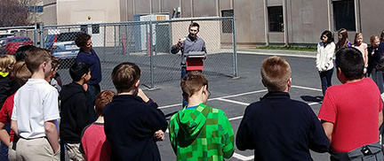
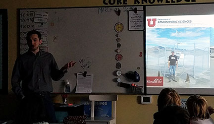

School Visits

I was nine years old when I decided I wanted to be a meteorologist. The event that sparked my interest was the 1999 Salt Lake Tornado. I remember playing outside with my friends in the backyard on the windy day. After hearing about the tornado, my eyes were glued to the TV, flipping between news stations, listening to Mark Eubank, talk about the tornado and its movement through downtown. Other experiences in my life fueled my interest in meteorology. As early as 2nd grader, my mom bought be a book from the Scholastic book order called I Can Read About Weather. In 9th grade my earth systems teacher taught about fronts and pressure systems, and global circulation. I was fascinated. Around that time, I emailed Mark Eubank and asked him what I would need to do in high school to prepare for college to become a meteorologist. He replied that I should study well in my math and science courses, as well as learn some computer programming. My senior year of high school opened many opportunities to prepare to become a meteorologist. I took a TV broadcasting class, where my crowning moment was giving a weather report for the school district news station. I took AP Calculus which had story problems related to temperature changes over time. My counselor, Ms. Anderson, suggested I take a district learning class through UVU, Meteorology 1010. That class sealed the deal. I was interested in meteorology, I was good at it, and I decided I was going to become a meteorologist. I later attended the University of Utah and earned my Bachelor and Master's degree in atmospheric science. Today, I am working on my PhD. When I look back, I am amazed at the many opportunities that lead me to where I am and prepared me for the work I am doing.
 Other meteorologists have similar stories as mine. They often developed their interest in the weather from a young age. That is why I love teaching the young people about the weather. I hope the kids I talk to have a new understanding of how the things they learn in the classroom relate to the weather and have increased appreciation for knowledge. For some, I hope my visit to their classroom is another opportunity that fuels their interest in studying the atmosphere or sparks a new interest to become an atmospheric scientist.
UVU Technology 1010
Slides used for Utah Valley University Technology 1010 class
Python Demonstrations
WindRose
iPython Notebook used to demonstrate visualizing air quality data using the MesoWest API. Code
4th Grade
Slides used for fourth graders at Utah School for the Deaf and Blind
6th Grade
Slides used for sixth grade class at Odyssey Charter School
Utah weather science curriculum, 6th grade: Click Here
7th Grade
Slides used for seventh grader career fair at Spanish Fork Junior High School
Utah weather science curriculum, 6th grade: Click Here
8th Grade
Slides used for eighth graders at Ft. Herriman Junior High School
Utah weather science curriculum, 6th grade: Click Here